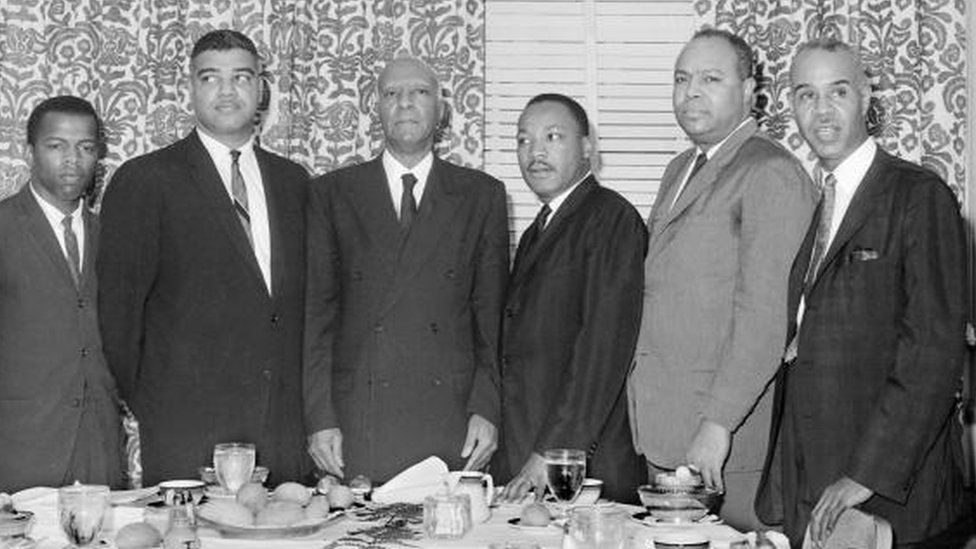

Book One begins with John Lewis recollecting his childhood in Alabama, working on the farm with chickens. He records history as it happens through his narrative.
Begins college at American Baptist Theological Seminary to be come a minister (Book 1, 64) While in college, Lewis states, "I started to feel guily for not doing more. I became restless" (Book 1, 65).
February 27th, 1960, John Lewis faced his first arrest after a sit-in, along with 81 other people (Book 1, 102-104).
Became chairman of SNCC in June 1963 (Book 2, 141).
Otis Carter
John Lewis' uncle, who brings him to New York in the summer of 1951.
Mae Charles
John Lewis aunt; Otis Carter's wife.
Aunt Leola
Aunt to John Lewis.
Coreen Harvey
School librarian.
Fred Gray
Fred Gray is the laywer for John Lewis to help in get into Troy State. Connects him to Dr. King Jr (Book 1, 66)
Brown vs. The Board of Education of Topeka
Passed in favor of integration of races in public schools in May of 1954 (Book 1, 53-54)
Emmett Till
August 1954, Emmett's body was pulled from the Tallahatchie River in Money, Mississippi. He was 14 and visiting from Chicago. A black farmer saw two white men dragging his body and testified against them in court. An all-white jury found them Not Guilty. They later openly confessed in a magazine, knowing they couldn't be tried again for the same crime (Book 1, 57).
Rosa Parks
December 1st, 1955, Rosa Parks refused to move to the back of the bus and was arrested (Book 1, 58).
Dr. Martin Luther King Jr.
First brought up as a preacher on the radio (Book 1, 55). Assembles the Bus Boycott in Montgomery, Alabama at the end of 1955, which lasts over a year (Book 1, 59).
John Lewis meets Dr. MLK Jr. in 1958 to discuss getting him into Troy State, an all-white college. They discuss about financial and legal support for Lewis, which would be easy to do, but Dr. King warns, "Well, you know-- To attend Troy State, we'll have to sue the State of Alabama and the Board of Education. [...] But you must keep in mind-- Your parents could lose their jobs. Your family home could be bombed or burned. You may get hurt-- or your family may get hurt, I don't know what will happen" (Book 1, 71). (John Ultimately decides fighting to get into Troy State is not a good ieda for the safety of himself and others (Book 1, 72).
Mongomery Bus Boycott
Sparked by Rosa Parks' refusal to move to the back of the bus in December 1955 (Book 1, 58-59). The boycott ran from December 5th, 1955 to December 20th, 1956 (history.com).
Jim Lawson
A graduate student representing the Fellowship of Reconciliation, Jim Lawson led a workshop on non-violence at First Baptist in Tennessee (Book 1, 75-76). Was later shunned by SNCC because he wanted to maintain non-violent demonstrations but after so many violent retaliations to the protests, members of SNCC wanted to be able to stand up for themselves and figth back (Book 2, 119).
Greensboro, North Carolina Sit-Ins
Monday, February 1st, 1960 four Freshman from North Carolina A&T sat at the lunch counter at Woolworth's (Book 1, 87). The following day, nineteen students (black and white) had joined the original four students. By Wednesday, the number grew to 85, as well as other sit-ins appearing in neighboring towns of Raleigh and Durham (Book 1, 88).
Nashville Sit-Ins
John Lewis and the Non-Violence Workshop students gathered and proceeded with their sit-in on February 7th, 1960 at Woolworth's (Book 1, 90-92). Their numbers grew to 200+ students for the next sit in on February 18th (Book 1, 96). Another sit-in took place Feb. 27, 1960, which became violent due to the white people pushing against the protests and arrests were made (Book 1, 97-103).
After desegregating lunch counters, he, among many others, continued to fast food restaurants and cafeterias as movie theaters. He would spend his 21st birthday in jail for a non-violent demonstration at a movie theater (Book 2, 25).
Became chairman of SNCC in June of 1963 (Book 2, 142).
Spoke sixth at the March on Washington, August 28th, 1963. [Video Below]
CORE
Congress of Racial Equality
This group formed the freedom riders, who were a group of civil rights activists who were testing the enforcement of the US Supreme Court decision of Boynton v. Virginia, which declared segregation of public transportation and interstate transportation to be illegal.
The Freedom Riders (Book 2, 33)
James Farmer
The leader of CORE and the Freedom Riders.
Joe Perkins
Left graduate school to become a CORE secretary.
Jim Peck
Went on CORE's first freedom ride in 1947, which landed all participants in a chain gang.
Elton Cox
A minister from North Carolina.
Dr. Walter Bergman and Frances Bergman
A professor from the University of Michigan and his wife.
Jimmy McDonald
A folk singer from NY.
Charles Person
18-year-old Physics student from Morehouse College.
Ed Blankenheim
CORE Staff Member.
Genevieve Hughes
A CORE field secretary.
Albert Bigelow
Tried to sail The Golden Rule to the Marshall Islands to protest atomic weapons.
Hank Thomas
A howard University Senior.
Eugene "Bull" Connor
Birmingham's Chief of Police. Assisted with the KKK.
On May 3rd, 1963, Bull Connor sprays protesters and marchers with firehoses, knocking them to the ground, and releasing dogs on them. This was televised and the world saw how terrible the racism really was (Book 2, 136-38). PBS Video on this point of the Civil Rights Movement.
Stokely Carmichael
A Howard University student. Went to Mississippi State Penitentary (Parchman Farm) with the Freedom Riders and took part of the "Matress War" (Book 2, 104). Carmichael tended to be a little more forward and confrontive when it came to protesting and standing up for people of color. According to a note in the book, "Stokely later said he never saw it as his responsibility to be the moral and spiritual reclamation of some racist thug" (Book 2, 112). CORE eventually asked Carmichael to leave as he did not align with the ways CORE protested and asked him to continue his protesting activities with a different group (Book 2, 112).
Robert Kennedy
Brother and Attourney General to John F. Kennedy.
Works with MLK Jr. to put a stop to the freedom riders (or a "cooling down period") until he can figure out how to enforce the Boynton decision, in which MLK Jr. states he can try but has no ability to control what others are going to do in regard to protesting (Book 2, 85, 95-96). James Farmer adds, "We've been cooling of for 350 years... The protesting will continue" (Book 2, 86).
June of 1961, R. Kennedy suggested that CORE and demonstrators turn their focus on registering black voters, which MLK Jr. fully endorsed, as it would allow people of color to vote and be direct lines of change to correct injustice (Book 2, 113).
Left SNCC to join SCLC. Organized and trained children in Bermingham, AL by going to Black churches and schools. May 2nd, 1963, nearly 1000 Black youth were arrested during a demonstration (Book 2, 134-35).
A. Philip Randolph
Founded the Brotherhood of Sleeping Car Porters in 1925. "First threatened to organize a march on the Capital City in 1941 as he faced off with President Roosevelt over whether or not African American workers would be integrated into the growing war economy," which resulted in "President Roosevelt signing an executive order forbidding the defense industry from discrimination in hiring, and plans for the march were canceled" (Book 2, 146).
Malcom X
Part of Nation of Islam. Supported violence to fight for Civil Rights, rather than peacefully (Book 2, 149).
The Big Six
L to R: John Lewis (SNCC), Whitney Young (Urban League), Philip Randolph (Brotherhood of Sleeping Car Porters), Martin Luther King Jr. (SCLC), James Farmer (CORE), and Roy Wilkins (NAACP). 1963. Photo from BBC.com.
Bayard Rustin
A pacifist and great organizer, who helped Randolph plan his march in 1941, but he was gay, which meant many found to be a problem (Book 2, 151). He was outed to the entire nation for being gay by the FBI (Book 2, 153). Nonetheless, he still assisted in the March on Washington in 1963, even with personal attacks on being a homosexual.
Spent years 1960 to 1963 organizing Mississippi chapters of SNCC. He was the head of the Council of Federated Organizations (COFO), a coalition of SNCC, SCLC, CORE, and NAACP activists for coordinating voting rights efforts (Book 3, 43).
Fannie Lou Hamer
Tried to register to vote in 1962 after hearing James (Jim) Bevel speak. Many found out about what she tried to do, which resulted in her getting fired, arrested, and deverely beaten. She then joined SNCC and became an activist (Book 3, 47).
November 22, 1963
Thirty-fifth President of the United States, John Fitzgerald Kennedy, was assissinated in Dallas, Texas.
Becomes the 36th President of the United States effective November 23rd, 1963.
Johnson quickly passes the Civil Rights Bill but unfortunately he also pressured Civil Rights groups to stop protests and demonstrations, as they were "making it harder for him to win votes in Congress" (Book 3, 54). Although this proved to show some hope, he did have his fair share of blocking Civil Rights legistlation while he was a congressman.
Three CORE members, Mickey Schwerner, a young Jewish man from Brooklyn down to help in Mississippi with his wife, Rita, Andy Goodman, a21-year-old student at Queens College majoring in Antropology, and James Chaney, a Black CORE field secretary and native Mississippian, were pulled over by Sherrif Price. Price alerted two swaths of Klansmen who came to Price's aid and shot the three young men to death. They buried the three in makeshift graves. The FBI put as many as 200 agents on the case and investigated the disappearance of the three.